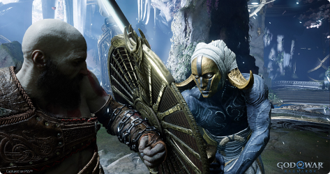
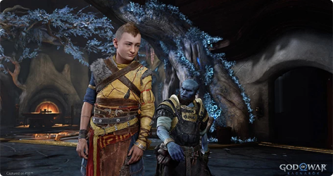
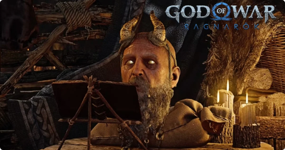
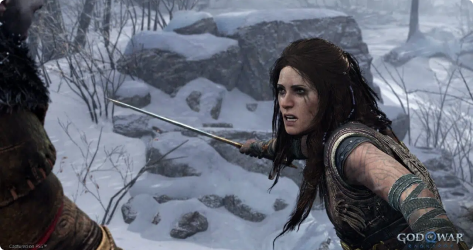

Embarque com Kratos e Atreus em uma jornada épica emocionante sobre apego e superação
Do Santa Monica Studio, esta é a sequência da aclamada versão de 2018 de God of War. O Fimbulwinter já começou. Kratos e Atreus devem viajar pelos Nove Reinos em busca de respostas enquanto as forças asgardianas se preparam para uma batalha profetizada que causará o fim do mundo. Nessa jornada, eles explorarão paisagens míticas impressionantes e enfrentarão inimigos aterradores: deuses nórdicos e monstros. A ameaça do Ragnarök se aproxima. Kratos e Atreus terão de escolher entre a segurança deles próprios e a dos reinos.
Kratos
O deus da guerra espartano construiu uma nova vida em Midgard. A paternidade deu a Kratos um novo propósito. Com o Ragnarök se aproximando, os riscos nunca foram tão altos. Kratos deve se decidir entre proteger o filho e a vida que construíram juntos ou defender os Nove Reinos da guerra catastrófica.
Atreus
Atreus é um semideus adolescente, filho de Kratos e da Giganta Laufey. Os Gigantes e os Aesir o conhecem como "Loki". Com a iminência do Ragnarök, Atreus quer a todo custo explorar e compreender melhor a própria identidade para encontrar seu lugar no mundo. Ele treinou muito com o pai e, embora o relacionamento entre os dois permaneça firme, Atreus anseia por começar a seguir o seu próprio caminho.
Mimir
Ele pode até ser uma cabeça decepada que depois foi ressuscitada, mas o Mimir continua com o título de homem mais inteligente vivo. Quando Kratos e Atreus o libertaram da árvore em que Odin o mantinha aprisionado, Mimir se juntou à aventura deles e se tornou um amigo de confiança e conselheiro tanto para o pai quanto para o filho. Com os Nove Reinos afundando no caos, agora eles precisarão da sabedoria do Mimir mais do que nunca.
Freya
Freya é uma deusa Vanir, já foi líder das Valquírias, ex-mulher de Odin e antiga rainha dos Aesir. Após a morte do seu amado filho Baldur, que estava afastado dela, Freya jurou uma vingança violenta contra Kratos e Atreus.
Poder rúnico refinado
Novas habilidades rúnicas permitem que Kratos use o Machado Leviatã de maneiras inéditas e surpreendentes. Obtenha e aprimore runas para o Machado Leviatã e execute ataques e habilidades de combate sem igual.

Mais do que um garoto com um arco
Atreus aprimorou suas habilidades de arquearia para desferir novos ataques poderosos com o Arco de Garra e desenvolveu novas habilidades de Invocação Rúnica, tornando-se um companheiro de combate valioso.